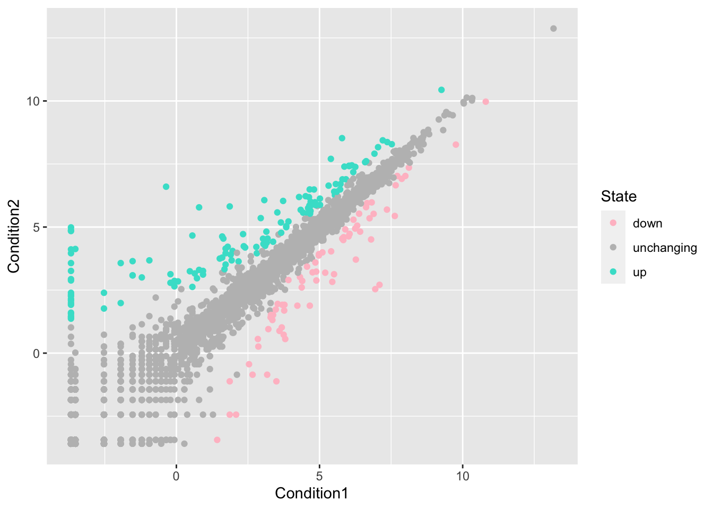

plot(cars)
R base graphics
plot(cars)
must load ggplot2 library before you can use it
library(ggplot2) ggplot(cars)
^ wont work
every ggplot needs at least 3 layers
data (ie the data.frame we have)
aes (the aesthetic mapping of our data to what we want to plot)
geoms (how we want to plot this stuff)
ggplot(data=cars) +
aes(x=speed, y=dist) +
geom_point() +
geom_smooth(method=lm, se=FALSE)`geom_smooth()` using formula 'y ~ x'
url <- "https://bioboot.github.io/bimm143_S20/class-material/up_down_expression.txt"
genes <- read.delim(url)
head(genes) Gene Condition1 Condition2 State
1 A4GNT -3.6808610 -3.4401355 unchanging
2 AAAS 4.5479580 4.3864126 unchanging
3 AASDH 3.7190695 3.4787276 unchanging
4 AATF 5.0784720 5.0151916 unchanging
5 AATK 0.4711421 0.5598642 unchanging
6 AB015752.4 -3.6808610 -3.5921390 unchangingp <- ggplot(data=genes) + aes(x=Condition1, y=Condition2, col=State) + geom_point()
p
up_table <- table(genes$State=="up")
up_table[2]TRUE
127 There are 5196 genes in this data set.
There are 4 columns in this data set, with titles Gene, Condition1, Condition2, State
Here are how many genes are upregulated: 127
Fraction of total genes upregulated: 2.4441878
p + scale_colour_manual( values=c("pink","gray","turquoise") )
p + labs(title=“Gene response to Drugs”, x = “drug”, y = “control”